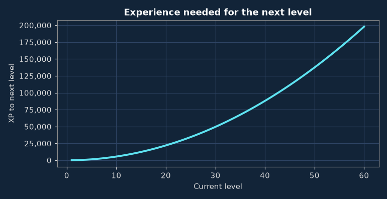
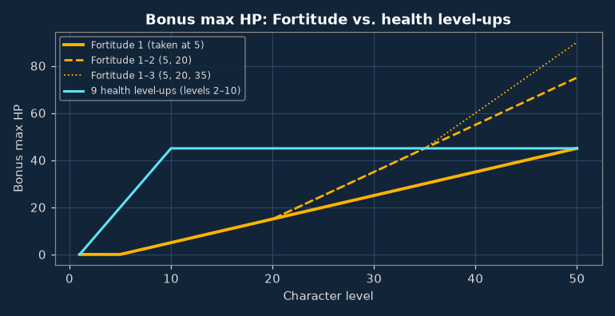
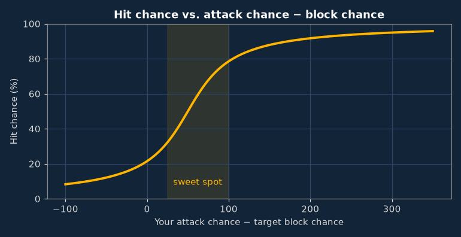
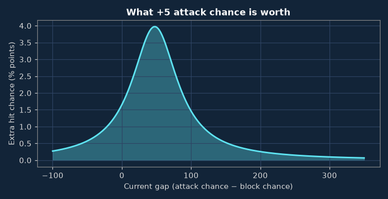
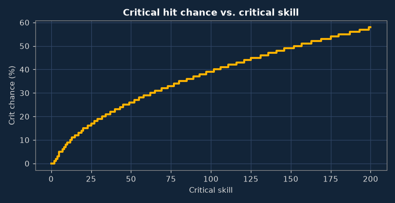
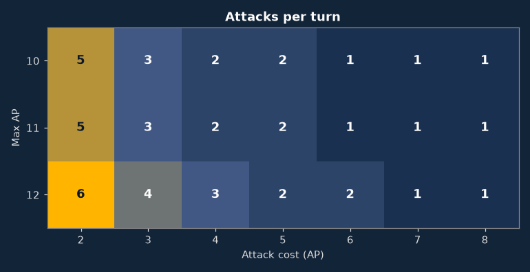

Stats & Skills¶
How your hero's numbers actually work in v0.8.18, pulled straight from the game's source code rather than from forum folklore. Click a heading to fold it away. Wondering what to do with all this? That's what Strategy is for.
Starting stats (level 1)
| Stat | Lv 1 | Stat | Lv 1 |
|---|---|---|---|
| Max HP | 25 | Critical skill | 0 |
| Max AP | 10 | Critical multiplier | – |
| Attack chance | 60 | Attack cost | 4 AP |
| Attack damage | 1–1 | Move cost | 6 AP |
| Block chance | 9 | Use item cost | 5 AP |
| Damage resistance | 0 | Re-equip cost | 5 AP |
Levelling up
| Choice each level-up | Bonus |
|---|---|
| Max health | +5 HP |
| Attack chance | +5 |
| Attack damage | +1 min & max |
| Block chance | +3 |
Pick one per level-up. There's no respec, so choose like you mean it. These picks form your base stats, which are the only values skill requirements look at. Gear and skills don't count, however shiny.
Skill points: levels 4, 8, 12, 16, 20, 24, 28, 32, 36, 40, 44, 48, 52, 56, 60. That's 12 by level 50, and every one of them will feel like a hard decision. Experience: level L → L+1 costs 55 × L². Quadratic growth, so the grind gets real.


One point of Fortitude at level 5 out-earns a health level-up by level 10. Add a second level at 20 and it matches nine health level-ups by level 35, while those nine level-ups were free to go into other stats. Details on Strategy.
| Level | Total XP | XP to next |
|---|---|---|
| 2 | 55 | 220 |
| 5 | 1,650 | 1,375 |
| 10 | 15,675 | 5,500 |
| 15 | 55,825 | 12,375 |
| 20 | 135,850 | 22,000 |
| 25 | 269,500 | 34,375 |
| 30 | 470,525 | 49,500 |
| 40 | 1,129,700 | 88,000 |
| 50 | 2,223,375 | 137,500 |
| 60 | 3,861,550 | 198,000 |
How combat works
Every attack goes through the same four steps. No hidden dice, no secret modifiers; this is the whole thing. The stat glossary explains each stat.
1 · Hit? hit % = 50 × (1 + (2/π) × arctan((AC − BC − 50) / 40))


| AC − BC | Hit | +5 AC adds |
|---|---|---|
| -50 | 12% | +0.6% |
| +0 | 21% | +1.7% |
| +25 | 32% | +3.0% |
| +50 | 50% | +4.0% |
| +75 | 67% | +2.7% |
| +100 | 78% | +1.5% |
| +150 | 87% | +0.5% |
| +200 | 91% | +0.3% |
| +300 | 94% | +0.1% |
2 · Damage: random between min and max attack damage.
3 · Critical? Only if you have critical skill above 0 and a critical multiplier, which comes from your weapon (or from Way of the Monk when fighting unarmed). No multiplier, no crits, no matter how much critical skill you pile up. Ghosts, constructs and demons are immune either way. crit % = −5 + 2 × √(5 × critical skill), then damage × multiplier.

| Crit skill | Crit % |
|---|---|
| 5 | 5% |
| 10 | 9% |
| 20 | 15% |
| 30 | 19% |
| 45 | 25% |
| 60 | 29% |
| 80 | 35% |
| 100 | 39% |
| 150 | 49% |
4 · Armor: the target's damage resistance is subtracted from the result, with a floor of 0. Yes, a hit can do zero damage, and yes, it's as annoying as it sounds.
Attacks per turn = max AP ÷ attack cost, rounded down.

All skills (45)
Learned with skill points (in the order the game lists them)
| Skill | Max | Prerequisite | What it does |
|---|---|---|---|
| Weapon Accuracy* | ∞ | – | Increases attack chance by 12 percentage points for each skill level. |
| Hard Hit | ∞ | – | Increases max damage by 2 for each skill level. |
| Merchant* | 3 | – | For every skill level, decreases the buying and selling gold penalty by 4 percentage points. |
| Dodge* | ∞ | – | Increases block chance by 9 percentage points for each skill level. |
| Bark Skin | 5 | Lv 10+ · Base block chance 15+ | Increases damage resistance by 1 for each skill level. |
| More Criticals | ∞ | – | Increases any existing critical skill given by equipment by 20 % for each skill level. |
| Better Criticals | ∞ | More Criticals 1 | Increases any existing critical multiplier given by equipment by 25 % for each skill level. |
| Combat Speed | 2 | Lv 15+ | Increases maximum action points (AP) by 1 for each skill level. |
| Treasure Hunter* | ∞ | – | Increases chance of finding gold in monster drops by 30 %, and increases amount of gold in drops by 50 % for each skill level (up to the maximum amount that the… |
| Quick Learner | ∞ | – | Increases amount of exp given by defeating monsters by 10 % for each skill level. |
| Cleave* | ∞ | Weapon Accuracy 1 · Hard Hit 1 | Gives +3 action points (AP) on every kill per skill level. |
| Corpse Eater | ∞ | Base max HP 40+ | Gives +1 health points (HP) on every kill per skill level. |
| Increased Fortitude* | ∞ | Lv 5+ | On every subsequent level-up, maximum health points (HP) will be raised by 1 per skill level. |
| Evasion* | 4 | – | For every skill level, reduces both the chance of failed flee attempts by 5 % and the chance that an adjacent monster will attack by 5 %. |
| Regeneration | ∞ | Base max HP 30+ · Increased Fortitude 1 | Gain +1 health points (HP) on every round per skill level when no monsters are directly adjacent. |
| Failure Mastery | 5 | – | For every skill level, reduces the amount of lost experience caused by death by 20 % (percentage of existing exp loss value, not percentage points). |
| Magic Finder* | ∞ | – | Increases the chance of finding non-ordinary items by 50 % for every skill level. |
| Strong Mind | 7 | – | Lowers the chance of being afflicted with mental conditions by 10 % for every skill level, up to a maximum of 70 %. |
| Enduring Body | 7 | – | Lowers the chance of being afflicted with conditions affecting your physical capacity by 10 % for every skill level, up to a maximum of 70 %. |
| Pure Blood | 7 | – | Lowers the chance of being afflicted with disorders of the blood by 10 % for every skill level, up to a maximum of 70 %. |
| Internal bleeding | 1 | More Criticals 2 · Better Criticals 2 | For every critical hit made, there is a 50 % chance that the hit will cause internal bleeding on the target, effectively causing the 'Internal bleeding' condition on… |
| Fracture | 1 | More Criticals 4 · Better Criticals 4 · Internal bleeding 1 | For every critical hit made, there is a 50 % chance that the hit will fracture some of the target's bones, effectively causing the 'Fracture' condition on the target. |
| Rejuvenation | 1 | Pure Blood 3 · Strong Mind 3 · Enduring Body 3 | Every round (6 seconds), there is a 20 % chance that one of the active negative actor conditions will be lowered by one magnitude. |
| Taunt | 1 | Evasion 2 · Dodge 4 | When an attacker makes an attack that misses, there is a 75 % chance that the attacker loses 2 action points (AP). |
| Concussion | 1 | Combat Speed 2 · Weapon Accuracy 3 · Hard Hit 5 | When making an attack on a target whose block chance (BC) is at least 50 lower than your attack chance (AC), there is a 15 % chance that the hit will cause a… |
| Fighting style: Dual wield | 2 | Lv 15+ | Gives benefits when fighting with two weapons at the same time, one in the main hand and one in the off-hand. |
| Fighting style: Two-handed weapon | 2 | Lv 15+ | Gives benefits when using weapons that require both hands to wield, such as two-handed swords, greataxes or giant hammers. |
| Fighting style: Weapon and shield | 2 | Lv 15+ | Gives benefits when fighting with a weapon in the main hand and having a shield or parrying weapon equipped in the off-hand. |
| Fighting style: Way of the monk | 3 | Lv 15+ | While fighting without having any piece of armor equipped and without using a weapon or shield, gain 12 attack chance, 5 block chance, 1 damage resistance and… |
| Specialization: Dual wield | 1 | Lv 45+ · Fighting style: Dual wield 2 | Increases the attack chance of both wielded weapons by an additional 50 % of their original attack chances, in addition to the benefits given by the weapon style skill. |
| Specialization: Two-handed weapon | 1 | Lv 45+ · Fighting style: Two-handed weapon 2 | Increases damage potential of two-handed weapons by an additional 50 % of the original damage potential, in addition to the benefits given by the weapon style skill. |
| Specialization: Weapon and shield | 1 | Lv 45+ · Fighting style: Weapon and shield 2 | Increases both attack chances and damage potential of weapons in the main hand. |
* Some quests also reward a level of this skill directly, without spending a skill point.
Unlocked through quests
| Skill | Max | Prerequisite | What it does |
|---|---|---|---|
| Dark blessing of the Shadow | 1 | Quest only | Lowers the chance of being afflicted with all types of conditions by 5 %. |
| Dagger proficiency | 3 | First level from a quest, then skill points | For each skill level, increases attack chance when using daggers and shortswords by 30 % of the item's base attack chance, increases block chance by 30 % of the… |
| One-handed sword proficiency | 3 | First level from a quest, then skill points | For each skill level, increases attack chance of rapiers, longswords and broadswords by 30 % of the item's base attack chance, increases block chance by 30 % of the… |
| Two-handed sword proficiency | 3 | First level from a quest, then skill points | For each skill level, increases attack chance of two-handed swords by 30 % of the item's base attack chance, increases block chance by 30 % of the item's base block… |
| Axe proficiency | 3 | First level from a quest, then skill points | For each skill level, increases attack chance of axes and greataxes by 30 % of the item's base attack chance, increases block chance by 30 % of the item's base block… |
| Blunt weapon proficiency | 3 | First level from a quest, then skill points | For each skill level, increases attack chance of blunt weapons by 30 % of the item's base attack chance, increases block chance by 30 % of the item's base block… |
| Unarmed fighting | 3 | First level from a quest, then skill points | When fighting without a weapon and shield, gain 20 attack chance, 2 damage potential and 5 block chance per skill level. |
| Pole weapon proficiency | 3 | First level from a quest, then skill points | For each skill level, increases attack chance when using pole weapons by 30 % of the item's base attack chance, increases block chance by 30 % of the item's base… |
| Shield proficiency | 2 | First level from a quest, then skill points | Increase damage resistance by 1 per skill level while having a shield or parrying weapon equipped. |
| Unarmored fighting | 3 | First level from a quest, then skill points | While fighting without having any piece of armor equipped, gain 10 block chance per skill level. |
| Light armor proficiency | 3 | First level from a quest, then skill points | For every skill level, increases the block chance of every piece of light armor being worn by 30 % of their original block chances. |
| Heavy armor proficiency | 4 | First level from a quest, then skill points | For every skill level, increases the block chance of every piece of heavy armor being worn by 20 % of their original block chances. |
| Spore poison immunity | 1 | Quest only | Permanently prevents monster attacks from inflicting the "Spore poisoning" status effect. |